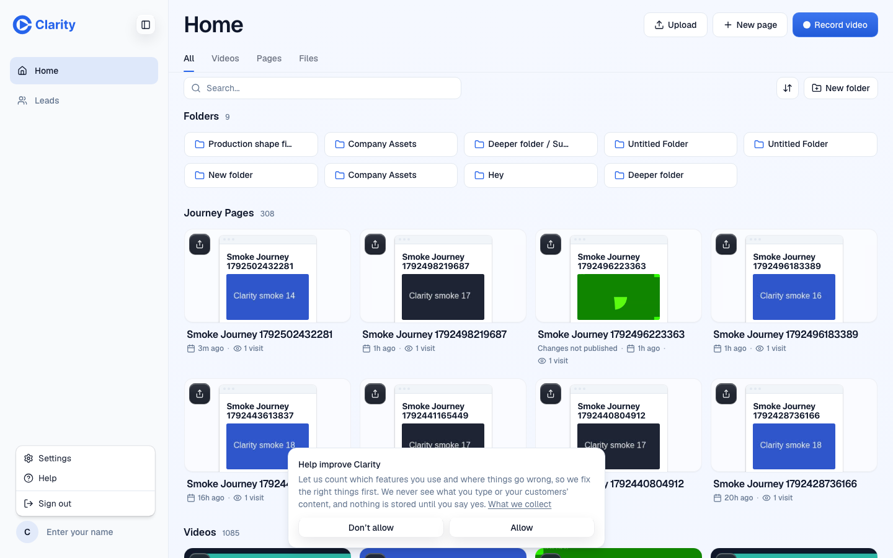
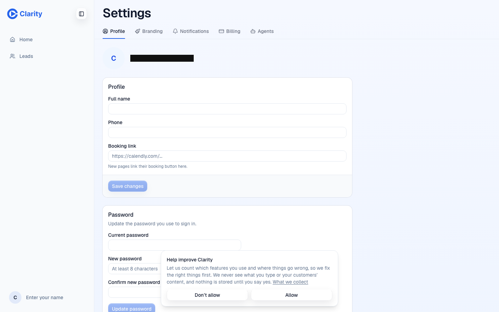
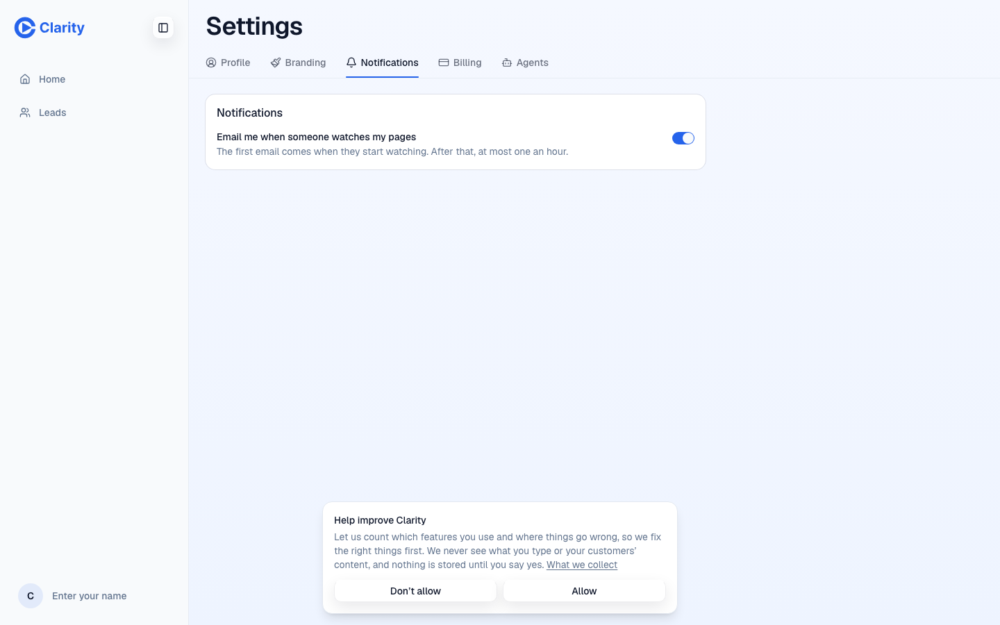
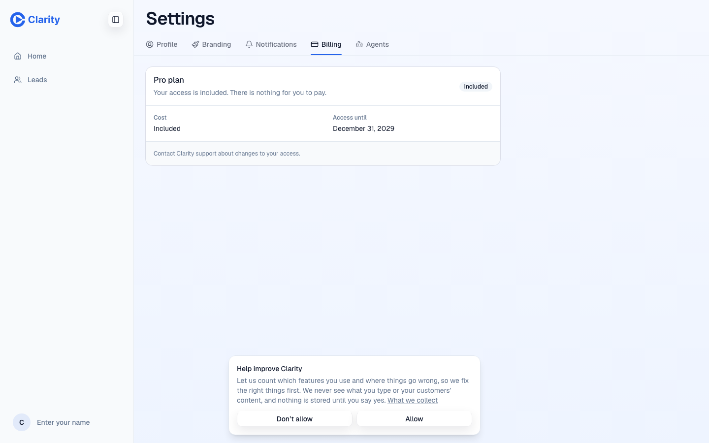
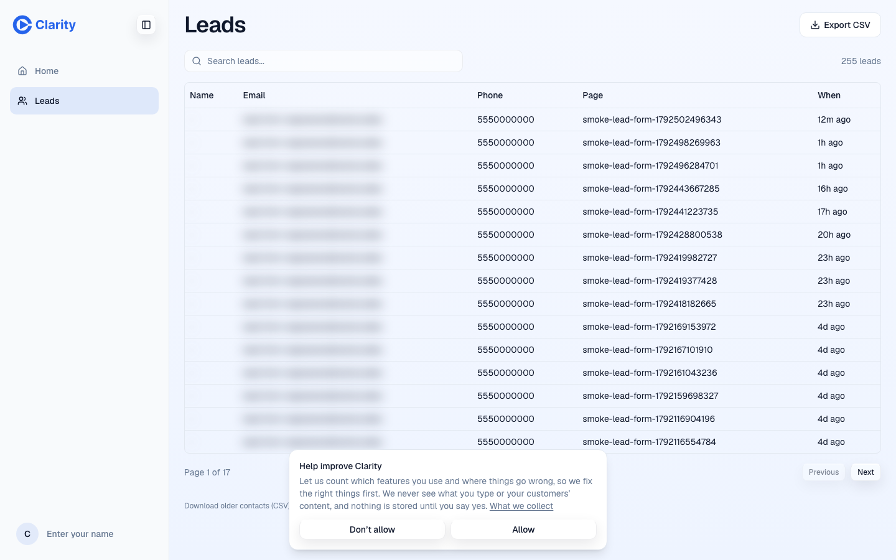
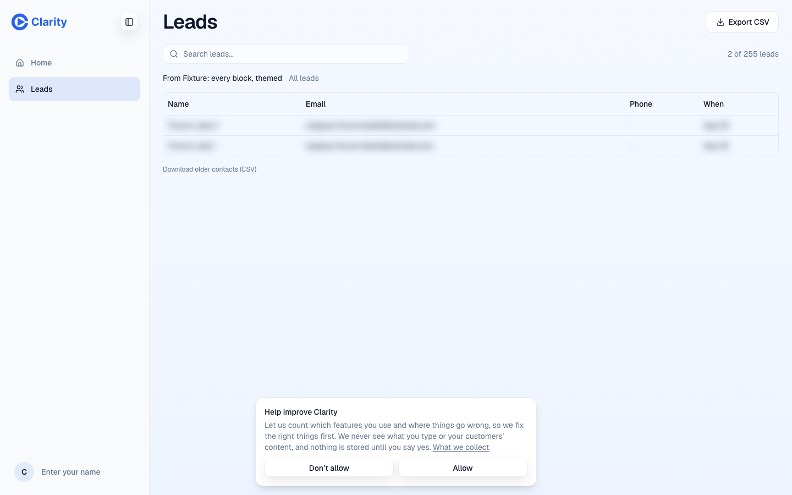

2026-10-20. Staging runs c8940722, the same version as production. Codex (gpt-6.1-sol) drove Chromium at 1440 and 390 wide, signed in as the test account. Every write and tracking call was blocked except sign-in and the read that loads Leads. Names and emails are blacked out or blurred.
What passed
The account menu lists Settings, Help and Sign out. The sidebar has no Settings link.
Settings opens on Profile. The tabs are Profile, Branding, Notifications, Billing and Agents.
Notifications has one switch: "Email me when someone watches my pages", with "The first email comes when they start watching. After that, at most one an hour."
Billing shows the plan card. This test account has included access, so it has no Manage billing button, as intended.
/settings, /profile and /settings/password go to /settings/profile. /settings/subscription goes to /settings/billing. The query string is kept.
On a phone the tab bar reads Home, Leads, Record, More. More opens the account menu, and Settings is reachable from it.
Leads loads 255 leads, 15 per page, with search and relative times. The older contacts link shows because this account has older contacts.
Opening Leads for one page shows "From" that page, 2 of 255 leads, and an All leads link that clears it.
/contacts goes to /leads and /learn goes to /help.
Not checked
Manage billing and the Stripe portal. The test account has no Stripe customer, and opening a portal session is a write.
An account with no older contacts, where the CSV link should be hidden. Every account checked here has them.
Noticed, not caused by these changes
The analytics consent prompt covers the lower middle of every page until it is answered, including part of the password form and the older contacts link.
On a phone the Settings tabs run past the right edge, so Billing and Agents need a sideways scroll.
Desktop

Account menu: Settings, Help, Sign out

Settings opens on Profile

Notifications: one switch, approved wording

Billing: plan card for an included account

Leads with search, pagination and the older contacts link

Leads filtered to one page, with All leads to clear